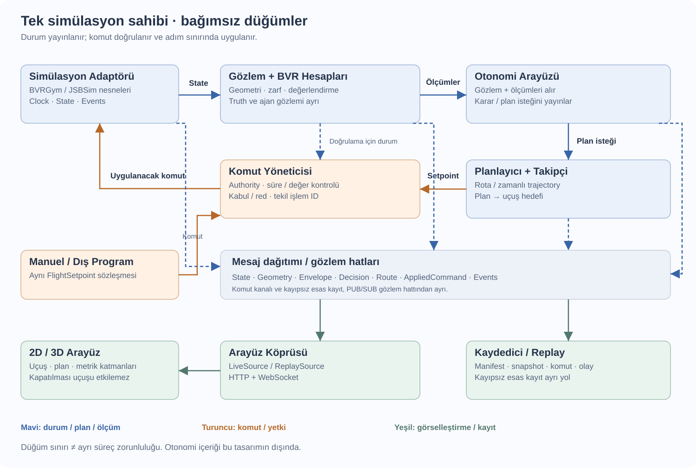
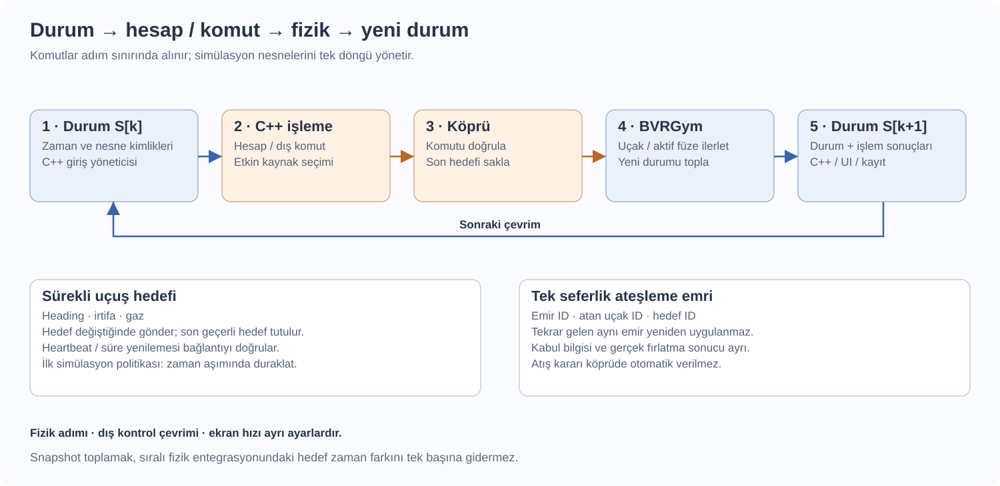
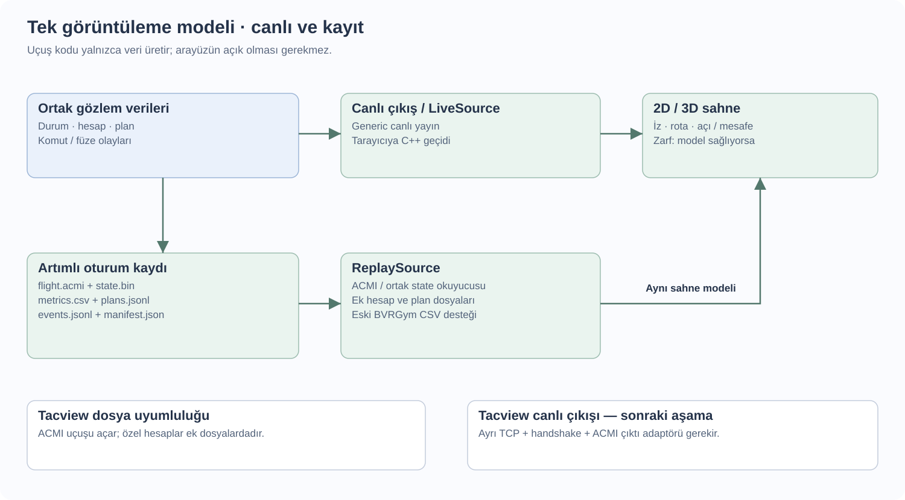

Angajman sistemi: mimari ve uygulama planı
9 Ekim 2026 · v2 · Uygulama öncesi son plan
Amaç: BVRGym/JSBSim uçuşunu dışarıdan C++ ile yönetmek; aynı uçuşun durumunu, hesaplarını ve planlanan rotasını canlı izlemek ve kaydetmek. Bu sürüm, önceki raporun Python/ZeroMQ ve ayrı node önerilerini değiştirir. Otonomi algoritmasının içeriği bu planın dışında kalır.
1. Kesinleşen kararlar
- Hesaplama, planlama, kontrol ve kayıt çekirdeği C++ olacak. Python yalnızca BVRGym tarafında kalacak.
- “Node” dediğimiz parçalar, aynı uygulamaya bağlanan C++ paketleri/kütüphaneleri olacak. Aralarında tipli veri yapıları ve fonksiyon çağrıları kullanılacak.
- Shared memory, ROS veya mesaj aracısı zorunlu değil. Süreçler arası taşıma yalnızca gerçek bir uygulama sınırında kullanılacak.
- İlk platform JSBSim/BVRGym. Gelecekteki platformlar aynı ortak giriş/çıkış arayüzüne kendi adaptörleriyle bağlanacak.
- Başlangıç nesneleri senaryo XML’i ile tanımlanacak. Çalışma sırasındaki uçuş ve ateşleme emirleri dışarıdan gelecek.
- Arayüz, kayıt ve uçuş mantığı bağımsız olacak. Arayüz kapatılınca simülasyon ve C++ çekirdeği çalışmaya devam edecek.
2. Genel yapı

Python köprüsü fizik nesnelerinin sahibidir. C++ platform adaptörü dış veriyi ortak tiplere dönüştürür; giriş yöneticisi kimlik, zaman, eksik veri ve güncel snapshot işlerini yürütür. Ortadaki katman ikinci bir ham veri okuyucu değildir: adaptörün ürettiği yapıları doğrudan kullanır.
Komut yöneticisi manuel/dış kaynak ile ileride eklenecek otonomi arasından etkin kaynağı seçer. Aynı uçağa aynı anda iki kaynağın komutu uygulanmaz. Kaydedici ve görselleştirme, hesap veya komut yolunun ön şartı değildir.
3. Paketler ve sorumlulukları
Her C++ paketinde include/, src/ ve CMakeLists.txt bulunur. Anlamlı doğrulamalar gerektiğinde tests/ eklenir. Paketlerin bağımlılıkları açık tanımlanır; hepsi common tiplerini kullanır.
| Paket | Temel görev ve önerilen dosyalar |
|---|---|
common | Kimlikler, zaman, koordinat/birim kuralları, durum ve komut tipleri. Platform veya arayüz bağımlılığı yok. |
platform_io | state_source.hpp, command_sink.hpp, jsbsim_bvr_adapter.cpp, input_manager.cpp. Dış veri çözümleme ve komut dönüştürme. |
calculations | geometry.cpp: hızlı geometri. envelopes.cpp: ağır zarf hesabı. assessment.cpp: profil bazlı MAR/DOR vb. |
autonomy | Güncel durum ve hesapları alan, karar/plan isteği üreten arayüz. İlk etapta pasif. |
planning | Rota/trajectory veri modeli ve planlayıcı arayüzü. İlk etapta örnek rota kabul edebilir. |
flight_control | command_manager.cpp: yetki ve doğrulama. trajectory_follower.cpp: ileride rotadan uçuş hedefi üretme. |
recording | ACMI yazımı, hesap/rota/olay kayıtları, oturum manifesti ve replay okuyucuları. |
visualization_bridge | Ortak veriden canlı görüntüleme akışı; mevcut tarayıcı için HTTP/WebSocket geçidi. |
Önerilen yerleşim:
Workspace/
cpp/
CMakeLists.txt
packages/
common/ platform_io/ calculations/ autonomy/
planning/ flight_control/ recording/ visualization_bridge/
apps/flight_system/main.cpp
simulation/bvrgym_bridge/ # Python: yükle, komutu uygula, ilerlet, veri ver
scenarios/iki_ucak.xml
profiles/ # model/kontrolcü profilleri
BVRGym/ # mevcut kütüphane ve modeller
BVRGym-Goruntuleyici/ # mevcut web sahnesi
recordings/ docs/Bu bir hedef yerleşimdir; mevcut örnek dosyaları hemen taşımak gerekmez. main.cpp çevrimi düzenler; uçuş algoritması veya hesap formülleri burada birikmez. BVRGym, web sahnesi ve dosya yazımı çekirdek hesap paketlerine bağımlılık olarak girmez.
4. Senaryo ve BVRGym çalıştırıcısı
Senaryo dosyası nesne kimliğini, görünen ismi, takımı, modeli, başlangıç durumunu ve mühimmatı belirler. XML aşağıdaki gibi olur; ikinci uçak için aynı yapı farklı id ile tekrarlanır:
<?xml version="1.0" encoding="UTF-8"?>
<scenario version="1" name="İki uçak denemesi">
<aircraft id="1" name="Kartal-1" team="blue" profile="f16_default">
<spawn latitude_deg="59.0" longitude_deg="18.0"
altitude_m="5000" speed_mps="250" heading_deg="90" />
<loadout missile_profile="aam_default" count="2" />
<initial_command heading_deg="90" altitude_m="5000" throttle="0.49" />
</aircraft>
</scenario>Bu, bizim senaryo şemamızdır; BVRGym’in doğrudan okuyabildiği hazır bir dünya XML’i değildir. Küçük Python yükleyici, profilleri mevcut f16_config/AAM_config ayarlarına eşler ve her uçak için bağımsız BaseBVRAgent oluşturur. JSBSim fizik/model XML’leri ayrı kalır. Profil adları önerilen takma adlardır; gerçek füze modeli profil dosyasında belirtilir.
Yükleyici eksik profil, tekrarlanan kimlik, geçersiz değer ve bulunamayan model yolunu başlangıçta bildirir. Dosya yolları konfigürasyon dosyasına göre çözülür; işletim sistemine özgü mutlak kullanıcı yolları senaryoya yazılmaz. Senaryo uçuş sırasında tekrar tekrar okunmaz.
Köprüdeki nesne tablosu id → agent eşlemesidir. İlk komut gelene kadar initial_command uygulanır. team="red" otomatik düşman davranışı başlatmaz. Başlangıç hızı ile uçuş sırasında hedef hız komutu ayrı kavramlardır; mevcut uçuş yolu heading/irtifa/gaz kabul eder.
5. Veri sözleşmeleri: az sayıda açık tip
C++ içindeki tipler ile ağdaki serileştirilmiş biçim ayrıdır. Algoritmalar JSON, socket veya JSBSim property isimlerini bilmez. Bütün bilgiyi her frame’e koymak yerine aşağıdaki veri aileleri kullanılır:
| Tip | Ne zaman? | Asgari içerik |
|---|---|---|
SessionInfo / EntityInfo | Başlangıç, yeniden bağlantı, değişiklik | Oturum, nesne kimliği, isim/takım/model, birimler, referans ve desteklenen komutlar. |
WorldState / EntityState | Periyodik | Snapshot zamanı; nesne kimliği, konum, yönelim, hız, gerekiyorsa Mach ve açısal hız; geçerlilik bilgisi. |
FlightSetpoint | Hedef değişiminde veya geçerlilik yenilemede | Uçak kimliği, komut sırası, hedef heading, irtifa, gaz, geçerlilik süresi. |
LaunchMissile | Yalnızca istendiğinde | Emir kimliği, atan uçak kimliği, hedef kimliği. İlk sürüm hazır sıradaki füzeyi seçer. |
CommandResult / EntityEvent | İşlem veya değişiklik olduğunda | Kabul/red ve uygulanma sonucu; fırlatma, hit/lost, envanter değişimi, nesne kaldırma. |
GeometryResult | Kontrol çevriminde | Kaynak snapshot, own/target kimlikleri, mesafe, closure, ATA/AA ve geçerlilik. |
EnvelopeResult / AssessmentResult | Yeni sonuç veya profil değişiminde | Kaynak snapshot, model/profil, koşullar, sınır veya eşik, geçerlilik. |
Plan / DecisionInfo | Plan/karar değişiminde | Plan kimliği, kaynak durum, rota/zamanlı örnekler, geçerlilik; algoritmanın sağladığı açıklama. |
Mühimmat sayısı başlangıç bilgisinde ve değişim olayında verilir; yeniden bağlanan istemci güncel envanter snapshotını alır. İsim, model ve profil metinleri sürekli tekrarlanmaz. Başlık bilgisi frame düzeyindedir; her nesneye aynı oturum/zaman başlığı kopyalanmaz.
Başlangıç tip önerisi: nesne kimliği uint32_t, oturum kimliği uint64_t, reset dönemi/sıra uint32_t, ortak zaman uint64_t mikrosaniye. Konum ve hassas dönüşümler double; hız/açı/normalize değerler gereksinime göre float veya double; durumlar enum ve geçerlilik maskesi. Liste kapasiteleri ve metin boyutları platform profilinde sınırlanır.
Çekirdekte metre, saniye, m/s ve radyan kullanılır. Dünya konumu jeodezik WGS84 olarak saklanır; irtifanın MSL/ellipsoid referansı açık tutulur. Geometri için aynı yerel NED referansına dönüştürülür; ortak referans bilgisi oturumda taşınır. Yönelim, eksen tanımı açık quaternion ile temsil edilebilir; XML, JSBSim ve arayüz açıları adaptörde çevrilir. Eksik bir ölçüm sıfır sayılmaz; geçersiz olarak işaretlenir.
6. Dış iletişim ve simülasyon çevrimi
İlk uygulama için taşıma önerisi: yerel ağda durum yayını UDP; komutlar, olaylar, manifest ve snapshot talepleri çerçevelenmiş TCP. TCP akışı için uzunluk ve mesaj türü/sürümü tanımlanır. Sayısal serileştirme ve byte sırası açık yazılır; C++ struct belleği doğrudan gönderilmez. Harici bir mesaj aracısı kurulmaz. Kesin wire şeması ilk uygulama adımında dondurulur; çekirdek tipleri bundan bağımsızdır.
JSBSim’in native UDP çıktısını okuyabilen yol platform adaptöründe tutulur; çıkış XML’i property sırasını ve birimleri belirler. Bu akış tek başına ajan kimliği, envanter ve olayları vermez. Tam BVR senaryosu için Python köprüsünün bu bilgileri eklediği ortak zamanlı dünya snapshotı önerilir. İki giriş yolu aynı ortak tiplere çıkar; aynı nesnenin otoriter durum kaynağı bir oturumda tek seçilir. JSBSim output kaynak kodu.
UDP yayını geç katılan arayüz tarafından da dinlenebilir; alıcılar için ayrı hedef veya dağıtıcı kullanılır. Birden fazla program aynı UDP portuna bind ederek yayın dağıtımı yapılmaz. Başlangıç snapshotı/statik bilgiler servis kanalından alınır. Paket boyutu sınırlandırılır; büyük snapshotlar bölünürse frame/parça kimliği ve tamamlanma süresi tanımlanır. Eksik dünya frame’i sessizce tam kabul edilmez. Kayıp veya eski sıra elenir; veri kesilince alıcı durumu “bayat/bağlantı kesildi” olarak işaretler.

Bir çevrim: güncel durum alınır → hesaplar yapılır → etkin kaynağın komutu doğrulanır → Python köprüsü komutu adım sınırında uygular → bütün ilgili nesneler ilerletilir → yeni durum ve işlem sonuçları yayınlanır. Ağ alıcısı fizik nesnelerini doğrudan değiştirmez; işlemleri simülasyon döngüsüne teslim eder.
Son geçerli uçuş hedefi saklanır; her fizik adımında tekrar mesaj gerekmez. Bağlantı canlılığını anlamak için periyodik geçerlilik yenilemesi/heartbeat kullanılır. Komut zaman aşımında ilk simülasyon politikası duraklatma olabilir. Gerçek araçtaki geri dönüş davranışı platforma özgü ayrıca tanımlanır.
Ateşleme emirlerinde kimlik ile tekrar uygulama engellenir. “Kabul edildi” ve “füze gerçekten fırlatıldı” ayrı sonuçtur. Tekrar gönderilen emir, aynı kayıtlı sonuçla cevaplanır; reset/oturum değişiminde eski emir uygulanmaz. TCP tek başına uygulama düzeyinde bunu garanti etmez.
İlk çalışma modu yaklaşık gerçek zamanlıdır. Kilit adımlı deney sonradan eklenebilir: C++ cevabı gelmeden bir sonraki simülasyon aralığına geçilmez. Fizik adımı, dış komut çevrimi ve ekran frame hızı ayrı ayarlardır; Sim_time_step saniye anlamına gelmez. Ağ bekleme/kayıt/arayüz çizimi kontrol çevrimini sınırsız bloke etmez.
7. Hesaplar ve planlanan rotanın gösterimi
geometry.cpp aynı snapshot ve ortak referanstan mesafe, irtifa farkı, LOS, closure, ATA ve AA üretir. ATA/AA burun ekseni mi hız vektörü mü kullanıyor, AA hangi yönde sıfır kabul ediliyor: sözleşmede açık belirtilir. İlk veri kaynağı simülasyonun tam durumudur; ileride sensör/gözlem adaptörü ayrı eklenebilir.
envelopes.cpp daha ağır ve daha düşük frekanslı çalışabilir. Sonuç kaynağı olan snapshot ile yaşını taşır; güncel olmayan sınır otomatik güncelmiş gibi kullanılmaz. Canlı fizik nesnelerini ilerleterek zarf hesabı yapılmaz; ayrı model/örnekler kullanılır.
WEZ/NEZ ile MAR/DOR/MOR/DR JSBSim’in hazır evrensel çıktıları değildir. Silah/uçak modeli, hedef hareketi, varsayımlar ve değerlendirme profili gerekir. İlk etapta geometri uygulanır; zarf ve eşik arayüzleri hazırlanır, model seçilmeden gerçek sonuç varmış gibi değer üretilmez. Otonomi içeriği kullanıcı tarafından sonradan eklenir.
Rota noktaları, plan kimliği ve geçerlilik arayüze/kayıta verilir. Takipçi aynı planı uçuş hedeflerine dönüştürür. Böylece planlanan rota ile gerçekleşen uçuş ayrı izlenebilir.
8. Canlı arayüz, kayıt ve replay

Arayüzün LiveSource ve ReplaySource girişleri aynı görüntüleme modelini besler. Mevcut tarayıcı sahnesi ve JavaScript çizimi korunabilir; C++ geçidi canlı veriyi tarayıcıya aktarır. Ana sistemin Python kullanmasını gerektirmez.
2D/3D katmanları: uçak/füze durumu, uçuş izi, planlanan rota, seçili uçak-hedef geometrisi ve hesap çıktıları. 2D’de açı/mesafe göstergeleri ve zarf kesitleri; 3D’de konum/yönelim, LOS ve rota çizilir. Üç boyutlu zarf yalnızca hesap modeli hacim çıktısı sağlıyorsa gösterilir. Akıcılık tamponlanmış durumlar arasında interpolasyonla sağlanır; veri gelmezken uçak süresiz ileri yürütülmez.
Önerilen oturum kaydı:
recordings/<oturum>/
flight.acmi # Tacview uyumlu konum, yönelim, nesne bilgisi
state.bin # sürümlü ortak durum frame’leri; sayısal replay kaynağı
metrics.csv # geometri ve değerlendirme sonuçları
plans.jsonl # rota/trajectory değişimleri
events.jsonl # komutlar, uygulanma sonuçları ve olaylar
manifest.json # senaryo/profil, kimlikler, birimler, zaman ve sürümlerACMI tüm çekirdek durumunu taşımaz; state.bin kendi sürümlü kayıt şemamızdır, C++ bellek dökümü değildir. Ek dosyalar ortak oturum, zaman ve nesne kimliğiyle eşlenir. Tacview’in tanımadığı hesapların kendi arayüzümüzde gösterilmesi sidecar dosyalarıyla sağlanır; Tacview’de aynı katmanların görüneceği varsayılmaz. ACMI dosya formatı.
Mevcut BVRGym CSV kayıtları için okuyucu korunur. Yeni kayıt yazıcı artımlı çalışır, var olan oturum klasörünü silmez. Kayıt yetersiz kalırsa boşluk ve düşen frame sayısı bildirilir; UDP alıcısındaki kayıt “kayıpsız” olarak sunulmaz. İleride fizik adımı düzeyinde eksiksiz kayıt gerekirse simülasyon kaynağında ayrı güvenilir kayıt yolu eklenir.
Kendi canlı yayınımız Tacview canlı protokolü değildir. Tacview’de canlı izleme daha sonra ayrı TCP + handshake + ACMI çıktı adaptörüyle eklenebilir. Tacview gerçek zamanlı protokolü.
9. Mevcut durum ve uygulamada çözülecek sınırlar
Bugün src/bvrgym_sim_template_yaml_config.py scenario.yaml dosyasından uçak oluşturup yerel Python komutlarıyla uçuruyor; dış komut alıcısı yok. Mevcut görüntüleyici CSV replay yapıyor; canlı köprü henüz yok. Bu belgedeki yeni paketler, XML senaryo yükleyicisi ve protokoller henüz uygulanmadı. Ayrıntılı kaynak/alan listesi simülasyon veri referansında.
Mevcut BVRGym davranışları: heading/irtifa PID ile takip edilir, gaz komuttan gelir; hedef hız kontrolü hazır değildir. Füze güdümü içeride çalışır. BaseBVRAgent aynı füze profilinden mühimmat üretir ve kendi aktif füzesi varken yeni atışı engeller. Bunlar XML’e alan ekleyerek değişmez.
Adaptör doğrulamasında ele alınacak gerçek kaynak sorunları: jeodezik/jeosentrik enlem ayrımı; füze fırlatmada Mach değerinin m/s gibi aktarılması; sıralı uçak/füze adımlarındaki farklı zamanlı hedef okuması. Sonunda tek snapshot toplamak iç entegrasyon sırasını tek başına düzeltmez. Füze aşamasında bu sorunlar doğrulanıp gerekli küçük düzeltmeler yapılır.
Gerçek sisteme taşınabilirlik için çekirdek modellerden, UI’dan ve işletim sistemi socketlerinden bağımsız tutulur; kapasite ve süre bütçeleri açık tanımlanır. C++ kullanımı tek başına gerçek zaman garantisi vermez. Hedef donanım/OS belli olduğunda zamanlama, bellek tahsisi, sensör ve gerçek kumanda adaptörleri ayrıca doğrulanır. Gerçek araç heading/irtifa hedefini doğrudan kabul etmiyorsa uygun C++ uçuş denetleyicisi veya mevcut autopilot arayüzü gerekir; BVRGym PID’si bu ihtiyacı otomatik karşılamaz. Yeni platform JSBSim çıktısını taklit etmek zorunda kalmaz; aynı StateSource / CommandSink sözleşmelerini kendi desteklediği yeteneklerle uygular.
10. Küçük adımlarla uygulama sırası
| Aşama | Yapılacak iş | Bittiğini gösteren sonuç |
|---|---|---|
| 1. Sözleşme ve senaryo | Ortak tipler, koordinatlar, wire çerçevesi, XML alanları, iki F-16 profili | Senaryodan iki uçak açılır; kimlik ve başlangıç verileri doğru çıkar. |
| 2. C++ ↔ BVRGym çevrimi | İnce Python köprüsü, tek platform adaptörü, giriş/komut yöneticisi | C++’tan farklı uçaklara heading/irtifa/gaz verilir; uygulanma ve bağlantı kesilmesi gözlenir. |
| 3. Canlı gözlem ve kayıt | Generic canlı kaynak, ACMI ve ortak state kaydı, CSV uyumluluğu | Uçuş sürerken viewer açılır/kapanır; replay aynı durumları oynatır; ACMI Tacview’de açılır. |
| 4. Hafif geometri | Mesafe, closure, ATA/AA, 2D/3D katmanları | Bilinen geometri örnekleri doğrulanır; kaynak snapshot ve değerler UI/kayıtta eşleşir. |
| 5. Açık füze emri | Atış kimliği/sonucu, mühimmat/füze olayları, kaynak sorunlarının düzeltilmesi | Yalnızca dış emirle atış; tekrar emir ikinci füze oluşturmaz; füze kaydı/görüntüsü doğru. |
| 6. Rota ve genişleme | Örnek plan gösterimi; takipçi, otonomi ve zarf arayüzleri | Plan/gerçek iz ayrı görünür. Kullanıcı algoritması ortak verileri alıp aynı komut yoluna bağlanır. |
İlk geliştirme hedefi iki uçaklı, C++’tan komut alan, canlı durumu görülebilen temel çevrim. Ayrı node süreçleri, shared memory, bütün platform adaptörleri ve otonomi algoritması ilk kurulumun gereği değildir. Ağ şeması ve ölçüm alanları aşama 1’de netleştirilir; sonraki paketler bu küçük sözleşmeler üzerinden büyür.